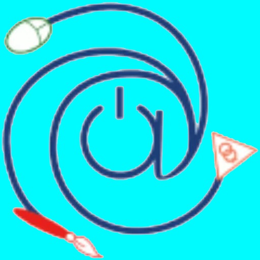
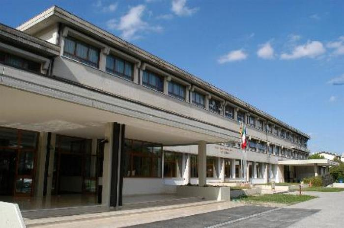

ITTS
Istituto Tecnico Tecnologico Statale
scuola
servizi
novità
didattica
per le aziende
registro elettronico
comunicati

INDIRIZZI DISPONIBILI A PARTIRE DAL TRIENNIO
Informatica
e telecomunicazione
grafica
e comunicazione
elettronica
ed elettrotecnica
IN EVIDENZA
Iscrizioni a.s. 2025-2026
Avviso manifestazione di interesse
Fuori di banco
esito manifestazione d'interesse
pubblicazione del verbale di esito di manifestazione
scuola aperta d'istituto volterra
scansione orario
assunzione servizio in data
scuola aperta istituto volterra